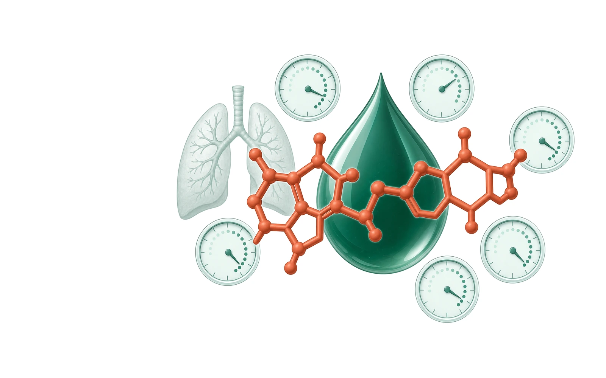
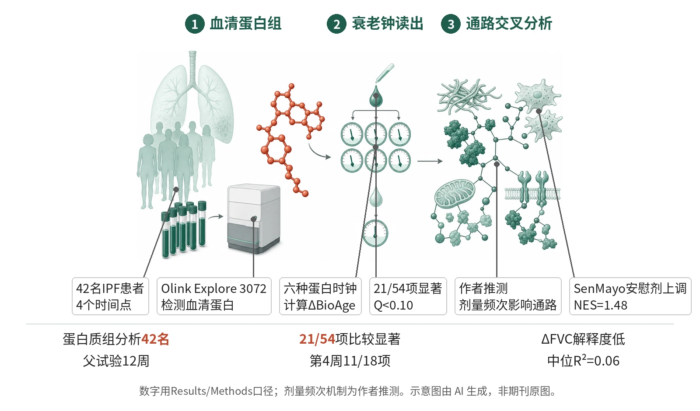

封面示意：深绿液滴前悬浮砖红分子，伴浅绿表盘与肺影。图片由 AI 生成，非原文图片。
在42名IPF患者的探索性蛋白质组子研究中，rentosertib使54个ΔBioAge比较中21个达Q<0.10，提示预测生物年龄下降。

- IPF试验采集血清
- 六种蛋白时钟估计ΔBioAge
- 治疗臂与安慰剂比较
- 通路分析提供解离线索
图示rentosertib蛋白质组附属分析的证据链：IPF患者纵向血清经Olink检测，六种蛋白质组衰老钟计算ΔBioAge；显著信号再与FVC、UK Biobank衰老轨迹、SenMayo和IGF轴通路做交叉分析，提供间接支持。示意图由 AI 生成，依据原文结果绘制，非期刊原图，不代表分子比例
研究背景与待解问题
许多年龄相关疾病药物可能同时触及衰老通路，但常规临床终点难以区分疾病改善与生物衰老调节。DNA甲基化时钟已有临床应用尝试，却常面临模型间不一致、解释困难和机制信息间接等问题。
Zhavoronkov等在Nature Biotechnology把一个AI设计的TNIK抑制剂rentosertib用于IPF试验的血清样本重新分析，比较六种蛋白质组衰老钟，并把时钟、蛋白轨迹、衰老队列和通路富集放在同一框架内，试图评估疾病试验能否同步读取潜在护老信号和机制线索。
研究设计
父试验为随机、双盲、安慰剂对照2a期IPF研究，在中国多中心开展。71例患者被分配至30 mg QD、30 mg BID、60 mg QD或安慰剂，四臂人数分别为18、18、18和17，治疗12周；原文没有说明蛋白质组子研究为组间ΔBioAge比较设计效能。
蛋白质组子研究中，43人同意，1人因第12周缺测被排除，最终42人、平均年龄67.1岁；各臂为安慰剂11、30 mg QD 11、30 mg BID 11、60 mg QD 9。血清在基线、第2周、第4周和第12周用Olink Explore 3072检测。核心读出是ΔBioAge，即相对基线的预测生物年龄变化；每个治疗臂与安慰剂用单侧Mann–Whitney U检验和Benjamini–Hochberg FDR比较。
核心结果
时钟先经校准
在42份基线样本上，四个按时间年龄训练的钟与实际年龄相关良好，Spearman r为0.70–0.84，线性校正后RMSE低于4年；两个死亡风险钟与年龄相关较弱，r为0.16–0.23。作者据此把两类钟视为互补读出，而不是同一量表。匿名化各时点预测值另列于补充表，供复核各钟读数。
主读出达显著
在54个治疗组对安慰剂的ΔBioAge比较中，21个达到Q<0.10；这些显著结果集中在第4周，当时18个比较中有11个显著。患者标签置换的零假设均值为0.15，而观察到21个显著比较；去除≥3级不良事件者后仍有19个，p<0.0001。
方案信号不同
按方案看，30 mg BID有9个显著比较，60 mg QD有7个，30 mg QD有5个。60 mg QD虽在原始试验中FVC改善最大，第4周四个时间年龄钟均显著降低，ΔBioAge为−2.71至−3.46年，但两个死亡风险钟均无显著改变。
平台而非消失
第12周信号转为平台：第4周到第12周，没有臂-时钟组合出现显著变化，配对Wilcoxon阈值为P<0.05。蛋白层面则不同，30 mg BID和60 mg QD仅5–9%的蛋白变化属短暂型；在衰老钟特征蛋白中，持续变化比例在两个活性剂量臂达到29–36%，提示时钟平台不等同于蛋白效应消退。
解离疾病改善
ΔFVC对ΔBioAge的解释度很低，中位R²为0.06，范围0.01–0.18，N=42。与UK Biobank的55,319名成人衰老轨迹相比，30 mg BID治疗变化负相关，r=−0.30、P<0.01；60 mg QD无此相关，r=−0.097、P=0.37。
机制解读
原文实验证明：线性混合模型显示，rentosertib相对安慰剂显著改变326个蛋白轨迹，安慰剂仅2个；其中237个只在一个治疗臂出现，89个在两个或更多治疗臂同向变化。30 mg BID有142个独有变化，和跨时钟信号最一致的观察相互对应。
GSEA显示衰老细胞相关循环蛋白呈相反轨迹：SenMayo签名在安慰剂中上调，NES=1.48、Q<0.01；除60 mg QD为Q=0.17外，治疗臂均为显著负向，Q<0.05。Reactome中IGF转运与IGFBP摄取通路在两个有效剂量臂下调，NES为−1.70至−1.66。
作者推测：作者推测，30 mg BID较低但更频繁给药，可能比60 mg QD的大峰值暴露更能维持与衰老相关的代谢、氧化还原和IGF轴调节；这种解释来自通路差异和药代讨论，并非直接测得组织TNIK占有率或因果机制。
局限与不确定
- 第一，外推性有限。蛋白质组分析只有42名亚洲IPF患者，且60 mg QD臂只有9人；衰老钟多来自UK Biobank训练，在严重纤维化人群中属于越界应用，作者也要求在非IPF人群确认。
- 第二，终点和随访仍偏探索性。观察期为12周，核心读出是血清ΔBioAge而非临床护老结局；第4周信号最强，第12周进入平台，尚不能判断长期持续性、间歇给药或功能获益。
- 第三，方法学上仍难拆分抗纤维化与抗衰老。作者明确把样本量小、观察期短、计算方法占主导和缺少其他组学列为限制；Olink面板少于3,000个蛋白，TNIK本身不在平台内，只能间接推断靶点通路。
临床/产业意义
如果后续在非IPF或风险富集老年人群中复现，这项工作提供了一种把AI设计药物的疾病试验扩展为护老信号侦测的模板：同一试验内预设血清蛋白质组、多个衰老钟、正常衰老轨迹参照和计算性通路分析。
对Insilico Medicine的rentosertib项目而言，结果还提示剂量频次可能影响生物学读出：30 mg BID的衰老钟和代谢通路信号更一致，而60 mg QD更接近FVC改善轴。当前证据只能支持探索性药效标志物，不能推出患者抗衰老疗效。